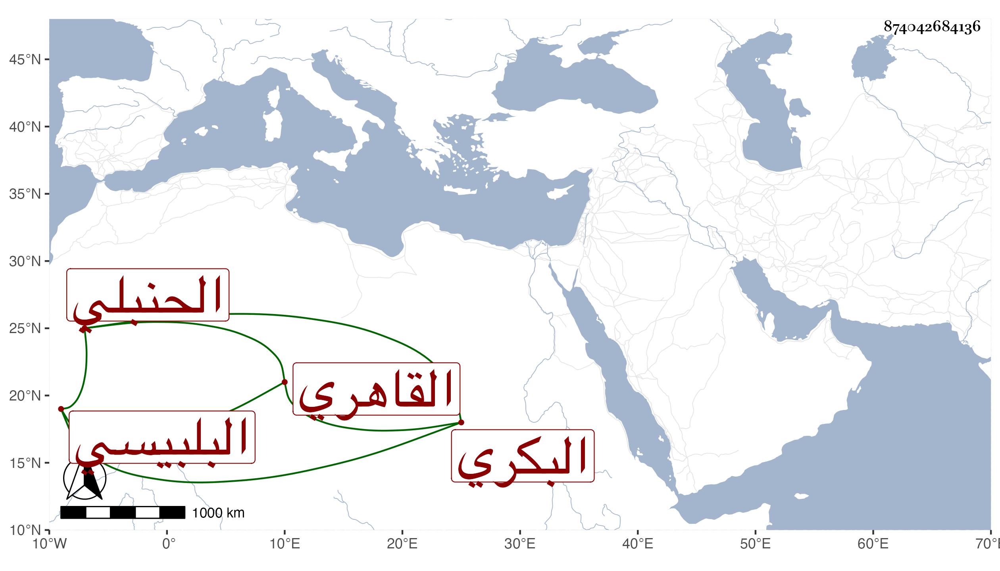

0902Sakhawi.DawLamic.ITO20230111-ara1.EIS1600.874042684136
Biography ID: 874042684136
112
محمد بن عبد القادر بن أبي بكر بن علي بن أبي بكر سعد الدين بن الزين البكري البلبيسي الأصل القاهري الحنبلي الماضي أبوه ويعرف بكاتب العليق . ولد في عاشر المحرم سنة خمس وعشرين وثمانمائة بحارة بهاء الدين ونشأ في كنف أبيه فحفظ القرآن والخرقي وكتب على الزين بن الصائغ ومهر في الكتابة وتدرب بأبيه في المباشرة ثم استقر بعده في كتابة العليق ثم أضيف إليه كتابة المماليك حين استقر متوليها صهره فرج في الوزر واستناب أخاه لأمه الشمس محمد بن علي البويطي في العليق ثم استقل به وباشر سعد الدين كتابة المماليك خاصة حتى صرف عنها بالتاج المقسي ثم استقر في نظر الاسطبل والأوقاف بعد العلاء بن الصابوني ثم صرف عنهما واستقر في استيفاء الخاص أيام صهره الزين بن الكويز إلى أن صرف بصرفه ، ثم لما مات عبد الكريم بن جلود واستقر ابن أبي الفتح المنوفي عوضه في كتابة المماليك صار هذا ثاني قلم فيها بل صرح له السلطان غير مرة بأن المعول في الديوان عليه وألزمه بديوان المفرد وتقدم في المباشرة جدا مع عقل وسكون وأدب وشكالة وصاهر عدة من الأعيان ، وهو بأخرة في ديانته وتصونه أحسن منه قبل ، وعلى كل حال فهو ناقص الحظ عن كثيرين ممن لم يبلغ مرتبته ولا كاد ، وقد حج سنة الزين عبد الباسط رجبيا .
